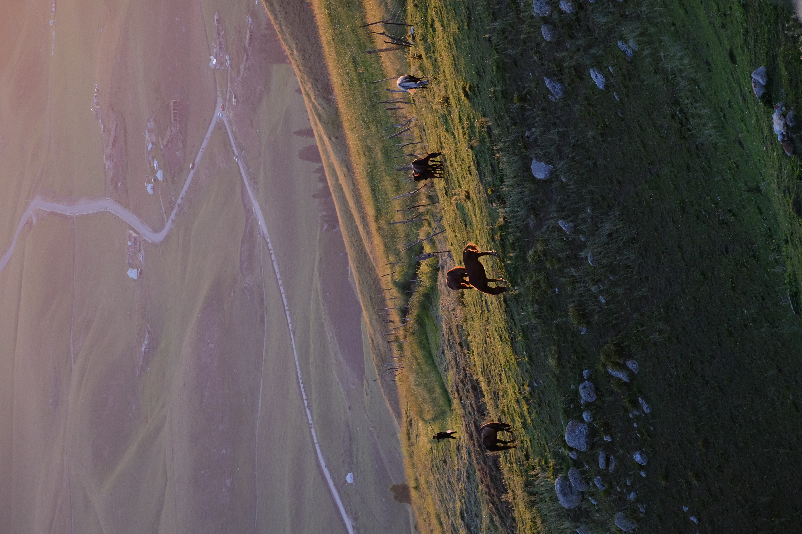
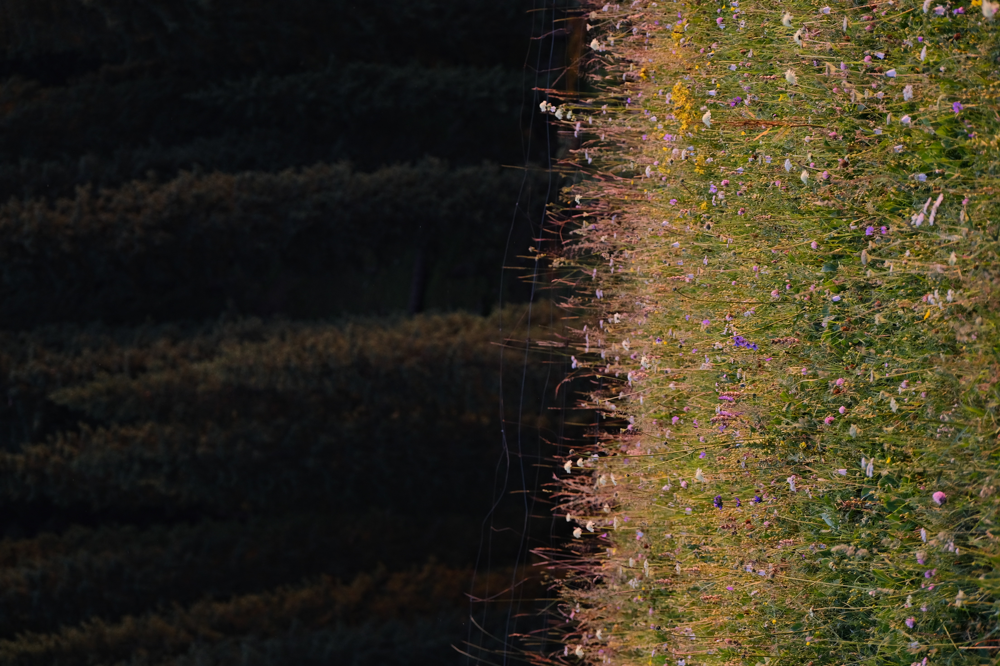

Yi Li

This is YilI, Xinjiang
2024-07-25
The woods nearby, the mountains and the sky in the distance—this is Yili, Xinjiang. China is home to so many beautiful places. I hope I will have the opportunity to experience the full splendor of my motherland's magnificent landscapes.
Night Sky
2024-07-27
At midnight, I was outside photographing the starry sky. Although I failed many times, I eventually managed to capture it.


My Back Figure
2024-07-26
I'm walking upwards—this is a shot of me from behind. It turned out really well.
Mountain View
2024-07-25
This place is absolutely stunning—no matter where you snap a photo, it turns out beautifully.


Mountains at Twilight
2024-07-26
At twilight, the mountains and trees blend together like a painting—and I capture this moment with my eyes and my camera.
Close-up of a Snow-capped Mountain
2024-07-25
This spectacular scene defies description.


Yurt Camp on High Pasture
2024-07-26
The sheep in the yard are grazing. I'm also having breakfast.
Hillsides and Grasslands
2024-07-26
A lush green meadow—perfect for grazing sheep.


Stream
2024-07-26
A small stream winds through the mountains, spanned by a wooden bridge.
Rushing River
2024-07-26
A rushing river in the woods.


Twilight Grassland
2024-07-26
The twilight bathed the meadow in a golden-yellow glow.
River and Rock
2024-07-26
A river flows between the mountains and the woods, and there are many stones in the river.


Horses
2024-07-27
Many horses are grazing on the grassland.
Herding Sheep
2024-07-27
A herdsman is herding sheep.


Mountain Wilderness Path
2024-07-27
The dense woods blocked our path and our view. I love this sense of unspoiled nature.
Wildflowers
2024-07-27
The wildflowers in the yard looked beautiful in the light of the setting sun.
